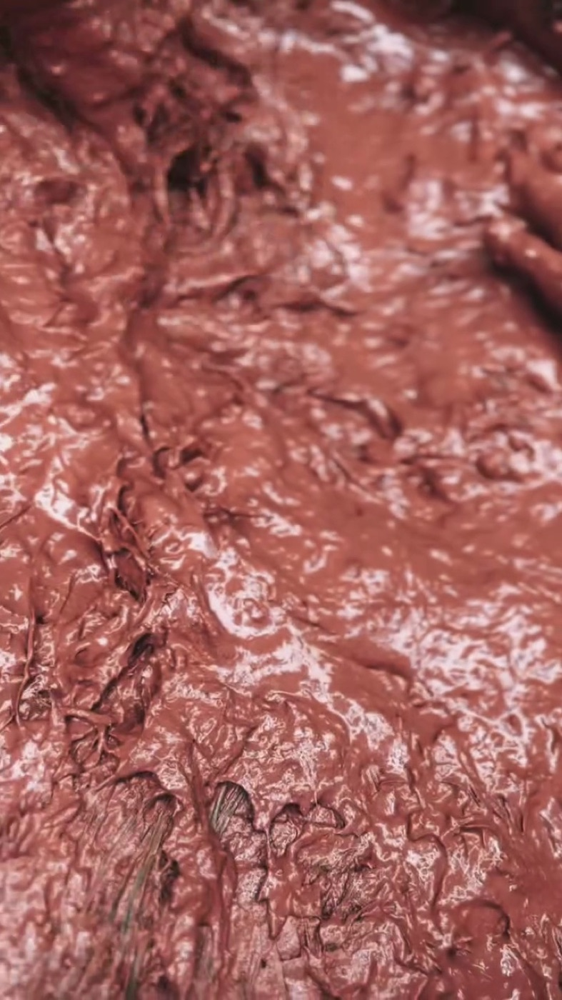
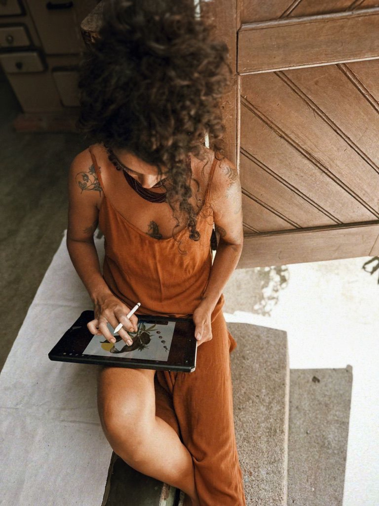

01
Musas em Retratos
Fotógrafas convidadas retratam mulheres reais compostas com as plantas de sua memória afetiva — uma ode à diversidade e à força feminina.
Ver projeto ARQ. Nº 001 / TERRA FÉRTIL, 2025
ARQ. Nº 001 / TERRA FÉRTIL, 2025
Artista multidisciplinar · Florianópolis, Brasil
Pigmentos naturais · fotografia · performance · instalação

Pigmentos extraídos da terra, de minerais e resíduos orgânicos — suportes e ferramentas feitos à mão.
Ver acervo
O corpo como território — estudos performáticos sobre pigmento, pele e paisagem.
Ver acervo
Rituais gravados em paisagens brasileiras e latino-americanas — corpo, terra e câmera.
Ver acervo Eliza Makray, ateliê, Florianópolis
Eliza Makray, ateliê, Florianópolis
Eliza Makray é artista multidisciplinar brasileira cuja prática une arte, natureza e ancestralidade.
Sua criação parte da escuta dos ciclos naturais, da valorização do fazer manual e do uso consciente de materiais como tintas naturais produzidas a partir de plantas, minerais e resíduos orgânicos — sementes, flores, folhas, raízes, cascas, pedras, ossos e galhos — com os quais cria seus suportes e ferramentas artísticas. Para ela, a arte é um espaço de experimentação, cura, reconexão e resistência.
Ler manifesto completo
Introdução ao universo dos pigmentos naturais — para crianças e adultos.

Geotintas feitas a partir da terra coletada na região onde o curso acontece.

Ferramentas artísticas manuais e conscientes, à margem do consumo industrial.

Encontros para jovens e adultos que buscam impulso para um novo projeto artístico.
Doze meses do universo botânico e feminino de Eliza Makray, transformados em objeto de convivência diária — um ciclo de arte, natureza e presença.
Conhecer o Calendário Musas